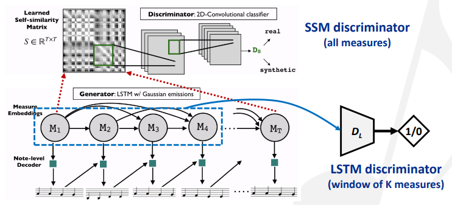
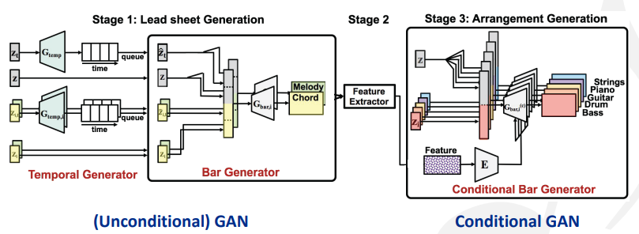
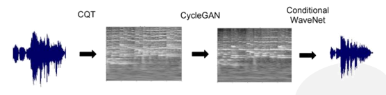
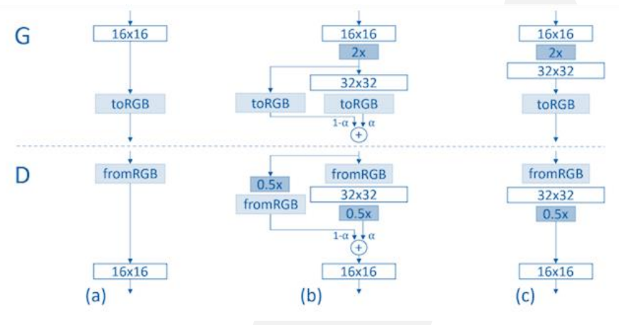
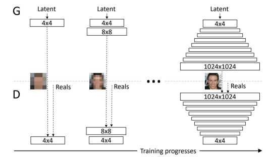

Notes for tutorial “Generating Music with GANs—An Overview and Case Studies” at ISMIR 2019
音乐生成研究简述
音乐制作角度
- 作曲（songwriting）：旋律，和弦，歌词
- 编曲（arranging）：器乐，结构
- 混音（mixing）：音色，平衡
音乐人工智能的应用场景：
- 激发音乐人的创作灵感
- 让每个人都可以制作音乐
- 为视频或游戏生产版权自由的音乐
- 音乐教育（比如自动伴奏）
相关公司：参考这篇文章
深度学习的角度
- 输入表示
- 模型
- 基于规则的方法
- 基于连接的方法
- 基于机器学习的方法：VAE，GAN
- 输出表示
输入/输出表示
- 离散的符号输出：钢琴卷（类似图像），MIDI（类似文本），乐谱（混合）
- 连续的音频输出：频谱（类似图像），信号波
这些表示方法的介绍可以参考这里。
问题分类
- 从头开始生成：由某个输入得到旋律，钢琴卷或音频
- 条件生成：由旋律得到钢琴卷（伴奏），由钢琴卷得到音频（合成），由钢琴卷A得到钢琴卷B（重新编曲），由音频A得到音频B
一些重要的工作：
- Symbolic melody generation: MidiNet [1], SSMGAN [2]
- Arrangement generation: MuseGAN [3], BinaryMuseGAN [4], LeadSheetGAN [5]
- Style transfer: CycleGAN [6], TimbreTron [7], Play-as-you-like [8], CycleBEGAN [9]
- Audio generation: WaveGAN [10], GANSynth [11]
[1] “MidiNet: A convolutional GAN for symbolic-domain music generation,” ISMIR 2017
[2] “Modeling self-repetition in music generation using structured adversaries,” ML4MD 2019
[3] “MuseGAN: Multi-track sequential GANs for symbolic music generation and accompaniment,” AAAI 2018
[4] “Convolutional GANs with binary neurons for polyphonic music generation,” ISMIR 2018
[5] “Lead sheet generation and arrangement by conditional GAN,” ISMIR-LBD 2018
[6] “Symbolic music genre transfer with CycleGAN,” ICTAI 2018
[7] “TimbreTron: A WaveNet(CycleGAN(CQT(Audio))) pipeline for musical timbre transfer,” ICLR 2019
[8] “Play as You Like: Timbre-enhanced multi-modal music style transfer,” AAAI 2019
[9] “Singing style transfer using cycle-consistent boundary equilibrium GANs,” ICML workshop 2018
[10] “Adversarial audio synthesis,” ICLR 2019
[11] “GANSynth: Adversarial neural audio synthesis,” ICLR 2019
GANs简介
训练生成模型的损失函数定义为对数损失函数。流向判别器的损失是将真实样本判断为假和将假样本判断为真。流向生成器的损失是被判别器判断为假的样本数，因为我们希望生成的样本尽可能让判别器认为是真的。

不规范的GANs存在一些问题。判别器为生成器提供的梯度指出了改进方向。判别比生成简单，而判别器倾向于提供大梯度（在图像中体现为明显、急剧的颜色变化），导致生成器的训练不够稳定。常见的失败情况有模式损坏（mode collapse，被判断为假的区域中有一块缺失判断），模式缺失（missing modes，被判断为真的区域中有一块缺失判断）。
规范化的GANs：为生成器提供更光滑的引导，减轻mode collapse和missing modes问题。
demo: GAN for images（Google Colab)
GANs vs VAEs

SOTA方法
可以在这个网站查看各种各样的GANs模型。
BigGANs：在潜空间上插值。demo (Google Colab)
Conditional GAN (CGAN)：对生成器和判别器都加上一个条件输入。

pix2pix：用逐像素点的损失来监督。

Cycle-consistent GAN (CycleGAN)：用循环一致的损失来监督，用于image-to-image translation（比如风格迁移）。

pix2pix和CycleGAN的损失计算方式如下图：

基于GANs的音乐生成方法举例
包含了很多数据集的Github仓库：symbolic datasets collection
符号旋律生成（Symbolic melody generation）
MidiNet：根据我们对音乐的理解来设计CNN核的大小。
SSMGAN：用GAN生成一个自相似矩阵（SSM）表示音乐中的自我重复，改进全局音乐结构；然后用LSTM生成旋律。

编曲生成（Arrangement generation）
挑战：
- 随时间的变化：动态，情绪，紧张度等
- 结构：长结构很难生成
- 器乐：多个音轨，要考虑乐器的作用
在真实世界的音乐中，这些元素以非常复杂的方式组织起来。
钢琴卷
优点：
- 非常好的符号化——用节拍来量化
- 很容易观察到重复、结构
- 不需要序列化复调创作
缺点：
- 存储效率低——大部分位置填充0，矩阵稀疏
- 抛开了音符的概念
- 很难处理演出级别的信息，除非使用高分辨率
MuseGAN：用不同类型的潜变量增强可控性。
| time dependent | time independent | |
|---|---|---|
| track dependent | melody | groove |
| track independent | chords | style |

demo: GAN for pianorolls (Google Colab)
BinaryMuseGAN：简单的二值化方法容易导致音符过于碎片化。BinaryMuseGAN的生成器输出层使用二值化神经元，用straight-through estimator估计梯度（使用不可微的操作符）。
LeadSheetGAN：分为三步
- 用非条件GAN生成时域，小节（称为lead sheet）
- 将上一步的输出组合成feature
- 将feature作为条件，和潜变量一起输入一个条件GAN，生成每个小节的编曲

风格迁移（Style transfer）
分类：
- 作曲风格迁移（保留内容，改变风格）：可以用标准CycleGAN，输入输出使用单轨钢琴卷。
- 演奏风格迁移：这方面的工作基本不使用深度学习）
- 音色风格迁移
Sony CSL Flow Machine：对音乐风格（genre）进行风格迁移。demo
TimbreTron：通过三个步骤对音色进行风格迁移。
- 计算CQT（Constant Q Transform) 频谱图并将其对数幅度值视为图像（丢弃相位信息）
- 使用改进的CycleGAN在对数CQT域中执行音色转换
- 使用条件的WaveNet生成器将生成的log-CQT转换为音频（这必须推断出丢失的相位信息）

TimbreTron可以在某些乐器对上成功进行音乐音色转换，同时保留相同的音乐内容（例如，节奏，响度，音调）。CQT表示法是TimbreTron中的关键组成部分，与STFT对应部分相比，它能实现低频的高频率分辨率和高频的高时间分辨率，从而得到更好的转换音质。
CycleGAN vs MUNIT：MUNIT (Multimodal unsupervised Image-to-Image Translation) 在CycleGAN基础上加入encoders/decoders，让内容和风格解耦。比起只能一次在两个域上进行转换的CycleGAN，MUNIT可以同时在多个域上进行转换。
Play-as-you-like：使用MUNIT进行无监督的音色转换，这一方法的核心是分离出domain invariant（音乐的内容）和domain specific（音乐的音色）的特征，然后通过不同的domain的部分进行转换生成。对每个domain有一个编码器$E$将原始音乐编码为内容$c$和风格$s$，一个生成器$G$根据输入的$c$和$s$生成对应的音乐，还有就是一个域鉴别器$D$，训练时使用Relativistic average GAN（RaGAN）的损失。该方法通过自身的重建、跨域生成鉴别损失、生成后再编码的编码一致性损失学习跨域的转换。由于这个方法中没有使用Cycle Consistency，所以基于上述损失不能保证转换后保留原始的音乐结构。所以该方法设计了一个Intrinsic Consistency Loss，约束转换前后的音乐的一些自相关的频域特征不变（mel-frequency cepstral coefficients (MFCC), spectral difference, and spectral envelope），从而约束音乐的自身结构不变。
CycleBEGAN：用BEGAN模型替换GAN，使用skip connections & recurrent layer。skip connections保持了歌声的清晰、自然，recurrent layers提高了各方面，尤其是音高准确性。在男女歌声之间进行transfer。
音频生成（Audio generation）
SpecGAN：模型基于DCGAN。将2D卷积平铺成1D（例如，5*5 2D conv变成25 1D conv），步长也相应进行增加（例如，2*2变成步长为4）。DCGAN生成$64\times 64$的图像，SpecGAN再增加一层，生成有16,384个点，即16kHz的频谱。
PGGAN：每个step不断增加latent的分辨率，在不同分辨率下训练generator和discriminator。
GANSynth：模型基于PGGAN（progressive growing GAN），从低到高逐渐增加分辨率，生成信号波。

训练过程中，在两种不同分辨率的输出之间以权重$\alpha$进行插值，$\alpha$线性地从0增长到1。最终输出的是mel-spectrogram + instantaneous freq (IF)。用 IF 可以推导出相位，然后用inverse STFT可以得到波形。

目前局限&未来研究方向
GANs的局限性
- 训练有些困难
- 只能学到一个方向的映射，而不是双向的
- 解释性较差
- 不太清楚GANs如何建模文本类的数据或者乐谱
- 不清楚GANs（以及所有其他的作曲模型）如何生成新的音乐类型
其他的生成模型：VAEs, flow-based models, autoregressive models, attention mechanisms, restricted Boltzmann machines, hidden Markov models…
未来研究方向
- 更好的适用于音乐数据的网络结构，多样性，可解释性，可控性
- 数据集和评估标准
- 跨模态生成
- 交互
- 表演风格迁移
- 在乐句级别上进行生成，而不是音符级别
- 多声部，无歌词，EDM的生成，…